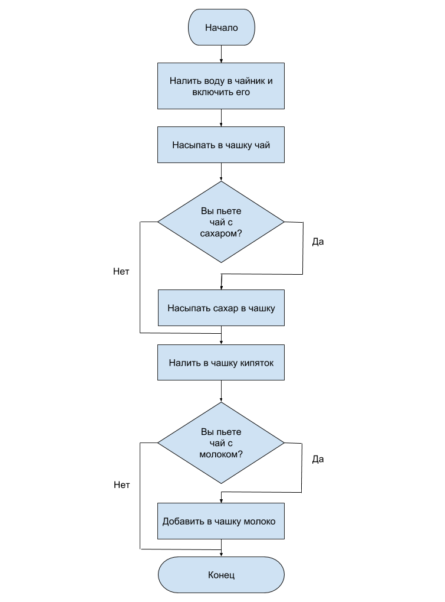

Циклы
- Нарисуйте блок-схему, иллюстрирующую алгоритм приготовления чашечки чая.img 
- Сформируйте строку вида ".#.#.#.#.#." чередованием символов . и # с помощью цикла for.
- Напишите цикл с шагом 1, в теле которого распечатываются квадраты каждого четного значения счетчика.
- Напишите цикл с confirm, который продолжается при нажатии на Отмена и прерывается при нажатии на Ok.
- В окно prompt вводится число. Напишите цикл, в котором суммируются все нечетные числа до диапазона, введенного пользователем. Результат отобразите в окне alert.
- Напишите бесконечный цикл, который прерывается при помощи команды break, когда Math.random() > 0.9. Выведите в окно alert случайное число, прервавшее цикл, и количество итераций цикла.
- Используя вложенные циклы, распечатайте на странице значения таблицы умножения: 1х1=1, 1x2=2 ... 2x1=2, 2x2=4...
- Используя вложенные циклы, сформируйте строку чередованием символов . и # таким образом, чтобы получилась шахматный узор. Для перевода строки используйте символ \n. Код должен поддерживать легкое изменение размеров доски
.#.#.#.#.#.#
#.#.#.#.#.#.
.#.#.#.#.#.#
#.#.#.#.#.#.
.#.#.#.#.#.#
- С помощью цикла for с пустым телом сформируйте строку, представляющую из себя ряд Фибоначчи: 0 1 1 2 3 5 8 13...
- Запустите цикл, в котором пользователю предлагается вводить число с клавиатуры, до тех пор, пока не будет нажата Отмена. После выхода из цикла распечатайте количество введенных чисел, их общую сумму и среднее арифметическое.
- Сформируйте строку в виде треугольника-елочки:
.....#.....
....###....
...#####...
..#######..
.#########.
###########